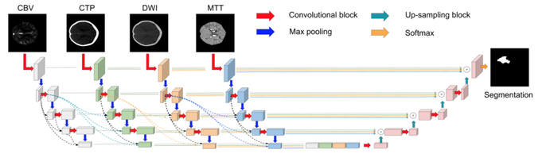
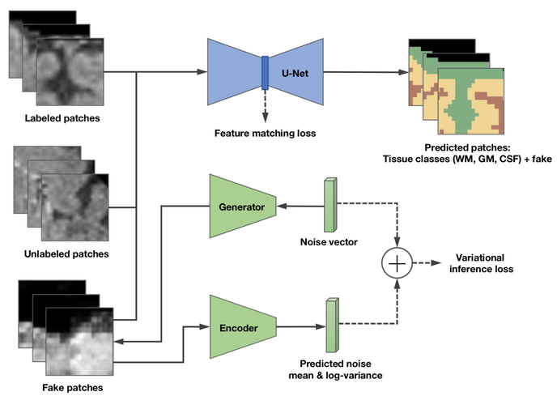
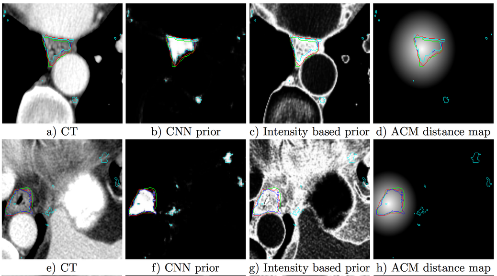
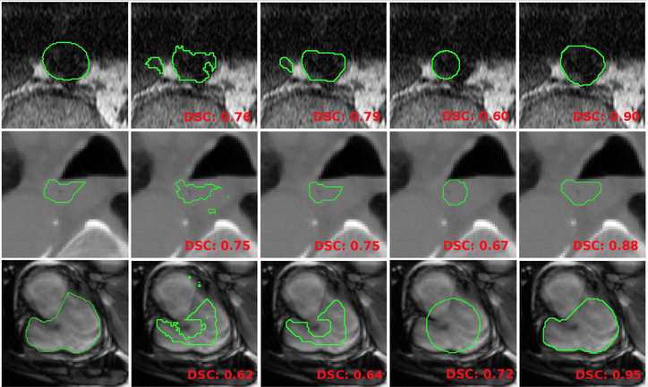
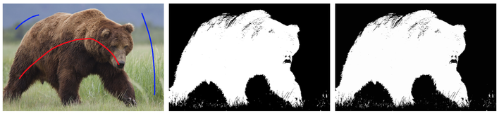

List of (selected) publications
|
|
Kervadec H, Bouchtiba J, Desrosiers C, Granger É, Dolz J, Ben Ayed I. Boundary loss for highly unbalanced segmentation. MIDL 2019. Oral (16% acceptance rate) [Paper] [Code] |
 |
J. Dolz, K. Gopinath, J. Yuan, H. Lombaert, C. Desrosiers, I. Ben Ayed. HyperDenseNet: a hyper-densely connected CNN for multi-modal semantic segmentation. IEEE Transactions on Medical Imaging, 2018. [Paper] [Code] |
|  | J. Dolz, I. Ben Ayed, C. Desrosiers. Dense multi-path U-Net for ischemic stroke lesion segmentation in multiple image modalities. In International MICCAI Brainlesion Workshop 2018 Sep 16 (pp. 271-282). Springer. [Paper] [Code] |
|  | A. K. Mondal, J. Dolz, C. Desrosiers. Few-shot 3D Multi-modal Medical Image Segmentation using Generative Adversarial Learning. arXiv preprint arXiv:1810.12241. 2018 Oct 29. [Paper] [Code] |
|  | T. Fechter, S. Adebahr, D. Baltas, I. Ben Ayed, C. Desrosiers, J. Dolz. Esophagus segmentation in CT via 3D fully convolutional neural network and random walk. Medical Physics, 44 (12), 6341-6352, 2017.[Paper] |
|  | J. Dolz, I. Ben Ayed, C. Desrosiers. Unbiased Shape Compactness for Segmentation MICCAI 2017 (pp. 755-763). [Paper] [Code] |
|  | J. Dolz, I Ben Ayed, C. Desrosiers. DOPE: Distributed Optimization for Pairwise Energies. IEEE Conference on Computer Vision and Pattern Recognition (CVPR), Honolulu, Hawai, pp. 6779-6788, 2017 [Paper] |
 |